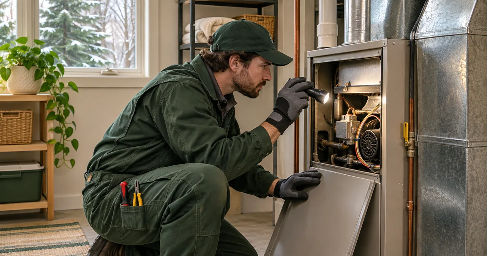
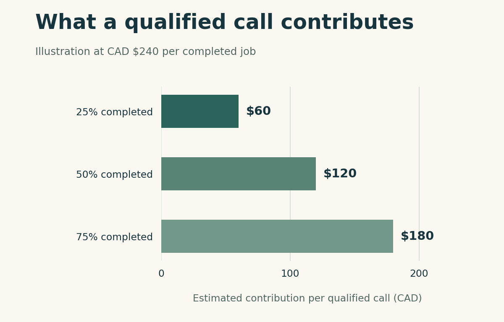

Published by ReviewRemoval. Authorship, sources and correction standards.
On this page
A homeowner with a failed furnace may call the first local contractor who looks trustworthy and has a crew available. A review about a missed repair or an unexpected call-out fee can change that choice. If the post describes a different business or appears to be fabricated, ReviewRemoval can assess the public review for a potential Google policy violation.
Request a free HVAC review assessment
Start with the dispatch log
Compare the service, city, call-out terms and approximate date in the review with your dispatch notes. Someone can have a genuine experience with your business by booking a visit or talking to a dispatcher, even when the repair never happened. An unrecognized display name is a reason to check, and evidence that names a different HVAC company gives you something more specific to report.
Consider a fictional example. A review on an Ottawa firm’s listing refers to an emergency boiler call in a town outside its service area and names another contractor. Save the public review link, a screenshot and the public details about the other business. If the post merely mentions a fee your company actually charges, route the complaint to the service manager. Google Maps content policies.

Put a value on the calls you can serve
Count calls from people in your service area who need work your team can take on. Follow those calls through to completed jobs. For example, suppose a completed repair contributes CAD $240 after parts, direct labour and travel. If one out of two qualified calls becomes a completed job, those calls average CAD $120 in contribution before overhead and tax.

View chart data
| Qualified calls completed | Contribution per call |
|---|---|
| 25% completed | CAD $60 |
| 50% completed | CAD $120 |
| 75% completed | CAD $180 |
Use identical definitions when comparing periods. Cold snaps, staffing, and the hours you answer your phone can change the numbers. The example puts a qualified call into dollars without estimating the effect of removing one review.
Give homeowners details they can check
Keep the service area, hours and booking options on your profile current. Set out the types of equipment you service and how someone can request a written estimate, especially when they’re comparing heat pump installers. HRAI advises Canadian homeowners to compare quotes on the equipment, warranty and work included. HRAI’s guide to choosing a heat pump contractor.
Hand off a case with clear evidence
Keep names, addresses and invoices in your own records. Send the public link, the closest matching service category and the clearest fact that supports your report. If you’ve already reported it, send the status as well. A free ReviewRemoval assessment can tell you whether our team can take on the reporting and agreed follow-up. Use the evidence checklist · Check the appeal process.
For approved work, ReviewRemoval charges CAD $50 upfront per review and CAD $125 per successful removal, before applicable taxes. See what the fees cover.
Need help with a specific review?
Send the public review link and a short description of the service or company the post describes. We’ll check which evidence supports the concern.
Request a free HVAC review assessment